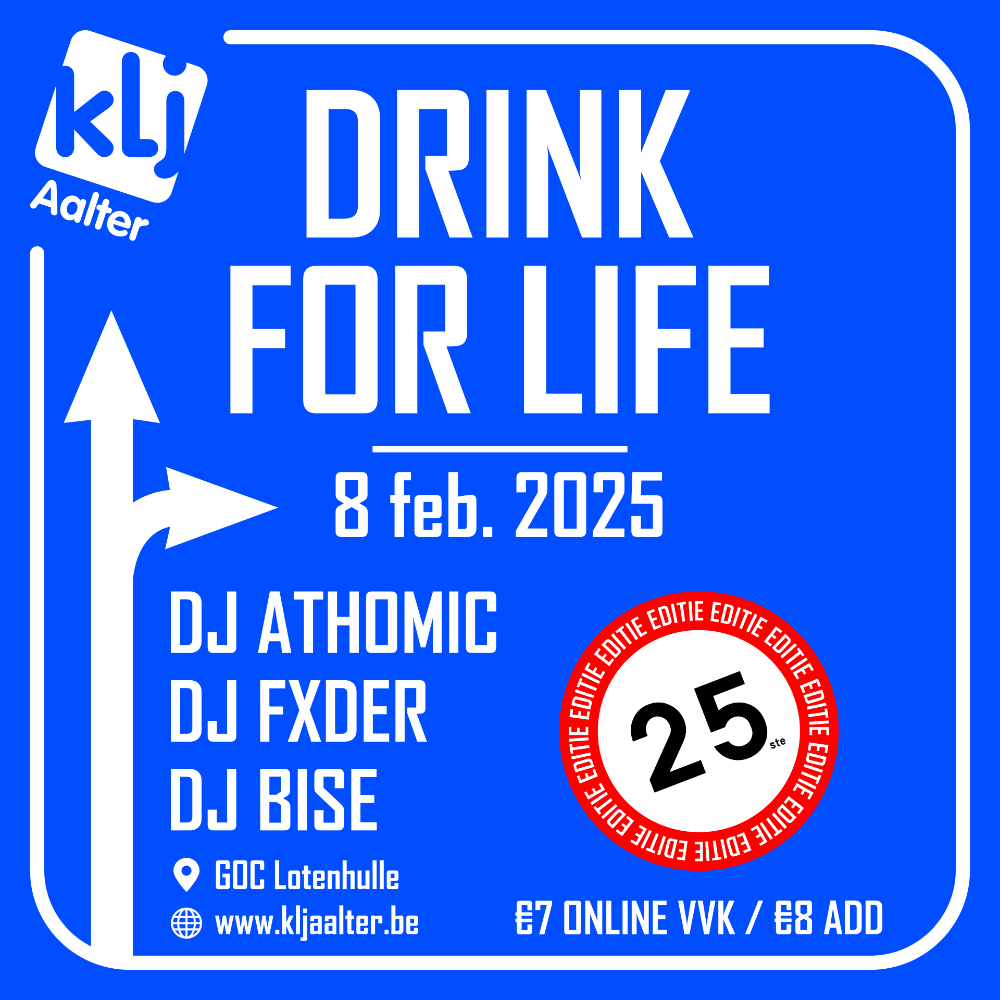

DRINK FOR LIFE 2025
üçª DRINK FOR LIFE - 8 FEB 2025 - 25ste EDITIE üçªKLJ Aalter presenteert de 25ste editie van DRINK FOR LIFE op zaterdag 8 februari 2025.
Vertier, bier en plezier verzekerd!!
üí∂ ‚Ǩ7 VVK / ‚Ǩ8 ADD
üìç GOC Lotenhulle / Guldensporenplein 11, Aalter
üç∫ Jupiler van ‚Äòt vat
üçπ Cocktailbar
üçî Hamburgerkraam
üëï Vestiaire
Online tickets >> [binnenkort beschikbaar]
// LINE-UP //
>> DJ ATHOMIC
>> DJ FXDER
>> DJ BISE
Tot dan!
Facebook evenement

Foto van de maand
Links
Instagram: @kljaalterFacebook: KLJ Aalter
Youtube: KLJ Aalter
Contact
Email: info@kljaalter.beWout Corijn: hoofdleider
0470 34 93 84
Adres
Melkerijstraat 14 Lotenhulle/Aalter 9880